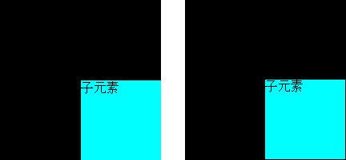
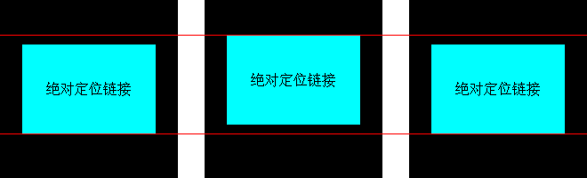

HTML代码
<div class="father"> <div class="son">子元素</div> </div>
CSS代码
.father { width:201px; height:201px; background:#000; position:relative; }
.son { width:100px; height:100px; background:#0FF; position:absolute; bottom:0; right:0; }
效果对比

其它浏览器√IE6×
学习总结：此bug与相对定位元素的宽高值的奇偶有关，偶数时正常，奇数时会偏移1px。解决方法有二：
1. 将相对定位元素宽和高改为偶数值；
2. 给相对定位元素添加padding属性，使宽高与padding的和为偶数。
HTML代码
<div class="navbar"> <a href="#">绝对定位链接</a> </div>
CSS代码
.navbar{width:200px; height:200px; position:relative; background:#000;}
.navbar a{position:absolute; top:50px; left:25px; display:block; width:150px; height:100px; line-height:100px; text-align:center; background:#0FF; color:#000; text-decoration:none;}
.navbar a:hover{top:40px;}
效果对比

原始状态IE8，火狐鼠标悬浮状态√IE6，IE7鼠标悬浮状态×
学习总结：在悬浮状态CSS中添加或修改某些属性可以解决该bug。已测试一些属性，结果如下：
可以解决：border, cursor, float, line-height, padding, margin, text-indent, clear, display（这些属性某些值不起作用，可尝试其他值）
不能解决：background, color, text-decoration